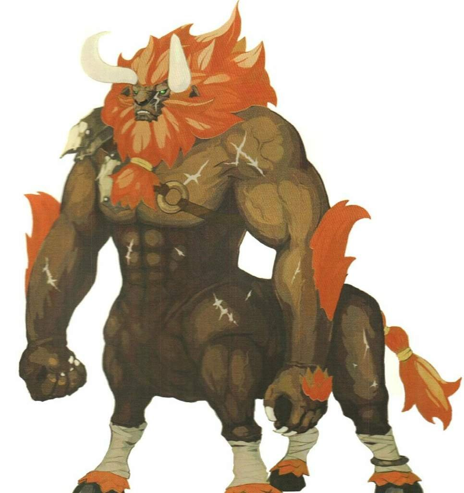

Goblin

Dragón Rojo
Demonios Menores de Hielo (Trío)
Slime y variantes

Centaleón

Pequeño humanoide (goblinoide), neutral maligno
Clase de Armadura: 15 (armadura de cuero, escudo)
Puntos de Golpe: 7 (2d6)
Velocidad: 30 pies
Normal Bestia / Humanoide| FOR | DES | CON | INT | SAB | CAR |
|---|---|---|---|---|---|
| 8 (-1) | 14 (+2) | 10 (+0) | 10 (+0) | 8 (-1) | 8 (-1) |
Habilidades: Sigilo +6
Sentidos: visión en la oscuridad 60 ft., Percepción pasiva 9
Idiomas: Común, Goblin
Desafío: 1/4 (50 PX)
Temen la luz brillante, la magia y a enemigos en gran número. Su moral es baja cuando combaten solos.
Dragón grande, caótico maligno
Clase de Armadura: 19 (armadura natural)
Puntos de Golpe: 256 (19d12+133)
Velocidad: 40 pies, volar 80 pies, trepar 40 pies
Legendario Criatura Mágica| FOR | DES | CON | INT | SAB | CAR |
|---|---|---|---|---|---|
| 27 (+8) | 10 (+0) | 25 (+7) | 16 (+3) | 15 (+2) | 21 (+5) |
Tiradas de Salvación: DEX +6, CON +13, WIS +8, CHA +11
Resistencias a Daño: —
Inmunidades a Daño: fuego
Inmunidades a Condición: asustado
Sentidos: visión verdadera 120 ft., percepción pasiva 21
Idiomas: Común, Dracónico
Desafío: 17 (18,000 PX)
El dragón puede realizar 3 acciones legendarias, eligiendo de entre las siguientes opciones. Solo puede usarse una acción a la vez y solo al final del turno de otra criatura:
Es vulnerable a enemigos resistentes al fuego, a la magia de hielo y a armas legendarias capaces de atravesar sus defensas.
Pequeño demonio, caótico maligno
Clase de Armadura: 13 (piel helada)
Puntos de Golpe: 22 (5d6+5) cada uno
Velocidad: 30 pies
Raro Demonio / Invocación| FUE | DES | CON | INT | SAB | CAR |
|---|---|---|---|---|---|
| 8 (-1) | 14 (+2) | 12 (+1) | 6 (-2) | 10 (+0) | 8 (-1) |
Tiradas de Salvación: DES +4, CON +3
Resistencias a Daño: frío, cortante no mágico
Inmunidades a Condición: encantado, asustado
Sentidos: visión en la oscuridad 60 ft., Percepción pasiva 10
Idiomas: entienden infernal y abisal, no hablan
Desafío: 1/2 (100 PX cada uno, ver Destino Compartido)
Pequeña criatura mágica, sin alineamiento
| FUE | DES | CON | INT | SAB | CAR |
|---|---|---|---|---|---|
| 6 (-2) | 8 (-1) | 12 (+1) | 1 (-5) | 6 (-2) | 2 (-4) |
Idiomas: —
Desafío: 1/4 (50 PX)
Ataque: Toque acuoso (1d6 de daño por frío).
Efecto: Si el objetivo falla CON CD 11, queda ralentizado hasta su siguiente turno.
Ataque: Toque ígneo (1d8 de daño de fuego).
Efecto: Objetivo debe superar DEX CD 12 o prenderse fuego (1d4 daño extra al inicio de su turno).
Ataque: Explosión de aire (empuja 10 pies).
Efecto: Puede inflarse y flotar a voluntad.
Ataque: Salpicadura lodosa (1d6 daño contundente).
Efecto: Reduce la velocidad del objetivo en 10 pies (1 turno).
Ataque: Toque venenoso (1d6 veneno + 1d4 ácido).
Efecto: Objetivo debe superar CON CD 13 o quedar envenenado 1 minuto.
Ataque: Toque espectral (1d8 de daño necrótico).
Efecto: Puede atravesar objetos y paredes.
Ataque: Descarga de plasma (2d6 relámpago).
Efecto: Cada criatura a 5 pies recibe 1d4 daño eléctrico adicional. Inmune a la magia menor.
Los Slimes suelen moverse en grupos, explorando cavernas, ruinas y zonas mágicamente alteradas. Aunque débiles en apariencia, su resistencia a ataques físicos y sus efectos únicos los hacen peligrosos. Muchos magos los utilizan como experimentos fallidos o guardianes improvisados.
Rareza: Epico Bestia magica
Actitud: Territorial, fija a un solo objetivo
Tipo: Bestia mágica grande, caótica neutral
El Centaleón es una fusión extraña entre un león majestuoso y un guerrero centauro. Su torso es humanoide y musculoso, con melena leonina, mientras que su cuerpo inferior es el de un león dorado con garras afiladas. Sus ojos ámbar brillan con ferocidad, y su rugido resuena como un trueno en las llanuras.
| FOR | DES | CON | INT | SAB | CAR |
|---|---|---|---|---|---|
| 18 (+4) | 14 (+2) | 15 (+2) | 10 (+0) | 12 (+1) | 13 (+1) |
Tiradas de Salvación: FOR +6, DES +4, CON +4
Resistencias: contundente, cortante y perforante no mágicos
Sentidos: visión en la oscuridad 60 pies, Percepción pasiva 13
Idiomas: entiende Común y Silvano, rara vez habla
Desafío: 6 (2,300 PX)
Marca a la criatura más fuerte o líder del grupo y se centra en ella. Su obsesión lo hace vulnerable a ataques coordinados. Si está en desventaja numérica, usa el Rugido Ensordecedor para dispersar a los aventureros. Nunca huye de su territorio.
Monstruosidad mediana (cambiaformas), neutral
Clase de Armadura: __CA__
Puntos de Golpe: __PG__
Velocidad: __VELOCIDAD__
__RAREZA__ __CATEGORIA__| FOR | DES | CON | INT | SAB | CAR |
|---|---|---|---|---|---|
| __FOR__ | __DES__ | __CON__ | __INT__ | __SAB__ | __CAR__ |
Tiradas de Salvación: __SALVACIONES__
Resistencias a Daño: __RESISTENCIAS__
Inmunidades a Daño: __INMUNIDADES_DAÑO__
Inmunidades a Condición: __INMUNIDADES_CONDICION__
Sentidos: __SENTIDOS__
Idiomas: __IDIOMAS__
Desafío: __DESAFIO__
__DESCRIPCION_ACCIONES_LEGENDARIAS__
__DEBILIDADES__